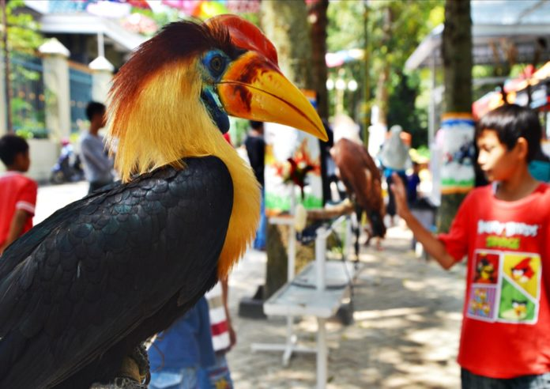

Taman Budaya dan Seni Tirtonadi

Blora selain terkenal sebagai kota Jati, juga terkenal dengan dunia seni. Banyak kesenian di Blora yang juga sudah dikenal oleh banyak kalangan. Salah satunya ditandai dengan didirikannya Taman Budaya dan seni Tertonadi, yang kemudian menjadi tempat wisata menarik di kota Blora. Lokasi ini wisatawan bisa menikmati beberapa hewan dan beberapa kesenian khas Blora. Taman ini rama ketika akhir pekan, sebab sebagai lokasi incaran bagi para wisatawan yang mengajak keluarganya.